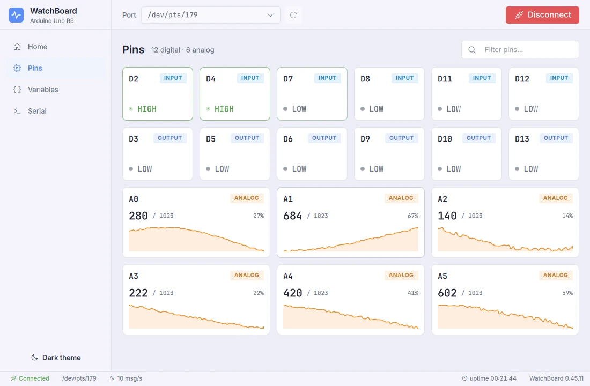
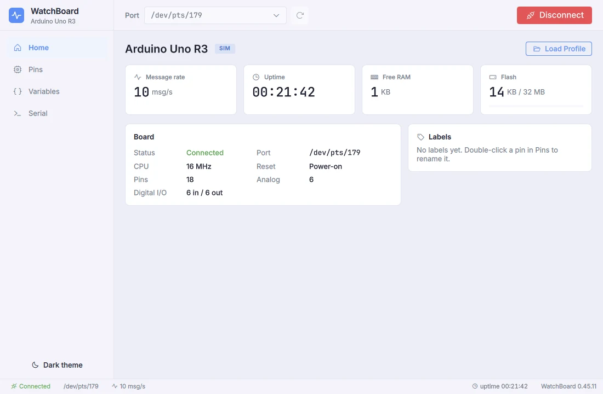

See what your microcontroller is doing, in real time
WatchBoard is a desktop dashboard for Arduino, ESP32 and friends. Add a small library to your sketch, plug the board in over USB, and watch its pins, variables and serial traffic live, without a single Serial.print.

Why WatchBoard
Between the Serial Monitor and a full dashboard stack
The Serial Monitor shows you raw text; dashboard tools want a server, flows and a browser tab. WatchBoard is a native app that opens in a second and shows the board as it is right now.
Debug by looking, not by printing
Instead of sprinkling Serial.print and reading a wall of text, watch pins and values change as the code runs, ten snapshots a second.
Five lines of firmware
Register pins, name the values you care about, call update() in loop(). Non-blocking, no dependencies.
Talk back to the board
Flip an output pin with a switch, or type a line and send it, with history, from the Serial tab.

Documentation
Using WatchBoard
Everything there is to know fits on this page. Start with the quick start; the rest is reference.
Quick start
- Install the app. Grab the build for your system from the releases page, or build it from source.
- Add the library to your sketch. Download
WatchBoard-library-version.zipfrom the same release and add it with Sketch → Include Library → Add .ZIP Library… (other ways), then:#include <WatchBoard.h> void setup() { pinMode(2, INPUT); WatchBoard.watchDigital(2); WatchBoard.watchAnalog(A0); WatchBoard.begin(Serial); // 115200 baud } void loop() { WatchBoard.watch("voltage", analogRead(A0) * (5.0f / 1023.0f)); WatchBoard.update(); // non-blocking: call it every loop } - Upload it, then connect. Close the Arduino Serial Monitor (only one program can hold the port), open WatchBoard, pick the board's port and click Connect. The pins show up right away.
Install the app
Ready-made builds are published on the releases page, next to a SHA256SUMS.txt to check them against:
- Linux:
watchboard-version-x86_64.AppImage. Make it executable (chmod +x) and run it; nothing to install. To reach the board, your user needs to be in thedialoutgroup (uucpon Arch). - macOS 13 or later:
WatchBoard-version-macos.dmg. Drag WatchBoard to Applications. The app is not notarized yet, so the first time macOS refuses to open it: go to System Settings → Privacy & Security and click Open Anyway. - Windows 10 or 11, 64-bit:
WatchBoard-version-setup.exe. It installs for your user only, without admin rights. If SmartScreen stops it, click More info → Run anyway.
If there isn't one for your system, building it takes a couple of commands.
Build from source
You need Qt 6.8 or newer (with the Qt Quick, Quick Controls 2 and Serial Port modules), CMake 3.16+ and a C++17 compiler. The UI library, Mahina, is downloaded by CMake while configuring, so the first configure needs an internet connection.
git clone https://github.com/ajunior/watchboard.git
cd watchboard
cmake -B build -DCMAKE_PREFIX_PATH=/path/to/Qt/6.x/gcc_64 # omit if Qt is installed system-wide
cmake --build build
./build/watchboardThe Arduino library
Each release carries the library as WatchBoard-library-version.zip. In the Arduino IDE, use Sketch → Include Library → Add .ZIP Library… and pick that file; with arduino-cli, arduino-cli lib install --zip-path WatchBoard-library-version.zip. From a clone of the repository you can instead copy firmware/WatchBoard into your Arduino libraries folder (~/Arduino/libraries on Linux and macOS, Documents\Arduino\libraries on Windows). It ships with an example, File → Examples → WatchBoard → BasicMonitor.
Use the library from the same release as the app: they speak one protocol and share one version number.
API
| Call | What it does |
|---|---|
WatchBoard.begin(Serial)WatchBoard.begin(Serial, baud) | Opens the serial port (115200 baud by default) and introduces the board to the app. Call it at the end of setup(), after registering pins. |
WatchBoard.watchDigital(pin) | Shows a digital pin. Set its pinMode yourself; outputs can be toggled from the app. |
WatchBoard.watchAnalog(pin) | Shows an analog input such as A0, with a bar and a sparkline. It's labelled with the board's own A name, so on an ESP32 GPIO36 appears as A0. |
WatchBoard.watch("name", value) | Publishes a named number. Call it whenever the value changes, or every loop; the latest value is what gets sent. Sent rounded to two decimal places; NaN and infinity are sent as null. |
WatchBoard.update() | Sends a snapshot every 100 ms and handles commands from the app. Never blocks, so it's safe to call on every loop(); don't put long delay()s around it. |
Limits
To stay small on an Uno, the library uses fixed-size tables. Registrations past a limit are ignored. You can raise them with a #define in WatchBoard.h, at the cost of RAM.
| Setting | Default |
|---|---|
WATCHBOARD_MAX_DIGITAL_PINS | 20 |
WATCHBOARD_MAX_ANALOG_PINS | 8 |
WATCHBOARD_MAX_WATCH_VARS | 16 |
WATCHBOARD_INTERVAL_MS | 100 (snapshot interval) |
Serial.print output still reaches the Serial tab, but it isn't parsed, so keep it to a minimum and prefer watch() for values.Connecting
The bar at the top of the window lists the serial ports it finds. Pick one and click Connect; if you plugged the board in after opening the app, press the refresh button next to the list. The status bar at the bottom shows the connection state, the port and how many messages a second are arriving.
The port field is also a text box, so you can type any path, such as /dev/ttyUSB0, COM3 or a virtual port like /dev/pts/3. To connect on startup, pass the port on the command line:
watchboard --port /dev/ttyACM0WatchBoard.begin(Serial) without a baud argument.Using the app
The sidebar has four tabs, also reachable with Ctrl+1 to Ctrl+4. The app remembers the last tab and your theme.
Home
An overview of the connected board: its name, the message rate, uptime, free RAM and flash use (where the board reports them), CPU speed, the reason for the last reset, and a count of pins by kind. The Labels card lists the pins you've renamed, and Load Profile loads a saved set of labels (see profiles).
Pins
- Digital pins show HIGH or LOW and their mode. An OUTPUT pin has a switch: click it to drive the pin HIGH or LOW on the board.
- Analog pins show the reading against the board's full scale (1023 on a 10-bit ADC, 4095 on a 12-bit one), as a bar and a sparkline of the last 60 readings, about 6 seconds.
- Double-click a pin's name to give it a label, like
SOIL_SENSORforA0. Clear the text to remove it. - Filter pins… narrows the grid by pin ID or label.
Variables
Every value you watch() is listed with its latest reading, and plotted over the last 30 seconds. Each variable has its own colour; click its dot to hide or show its line, and the Y axis rescales to fit what's still visible, so a small signal doesn't get flattened by a big one. Values that aren't numbers (possible when you write your own firmware) are listed but not plotted.
Serial
Every line sent and received on the port, timestamped, with arrows for direction. Use the box at the bottom to send a line to the board: Enter sends it, ↑ and ↓ step through what you sent before. Save writes the session to a .log or .txt file; Clear empties the view.
Pin labels & profiles
Labels are kept in a profile, a small JSON file you can save next to your sketch and commit with it. On the Home tab, Load Profile opens one; once a profile is loaded, the buttons let you save changes to it or Save As… a new file.
{
"board": "Greenhouse controller",
"labels": {
"A0": "SOIL_SENSOR",
"7": "PUMP_RELAY"
}
}Keys are pin IDs as the board reports them: digital pins by number, analog pins as A0, A1, and so on.
Keyboard shortcuts
| Keys | Action |
|---|---|
| Ctrl+1 … Ctrl+4 | Home, Pins, Variables, Serial |
| Ctrl+D | Switch between light and dark theme |
| F1 | About WatchBoard (also: click the version in the status bar) |
| Esc | Close the About dialog |
Serial protocol
The library is a convenience: the app speaks a plain protocol of one JSON object per line at 115200 baud, so any device or language that can write to a serial port can talk to it, such as MicroPython, a Raspberry Pi Pico SDK program, or a Python script on a virtual port.
hello: device → app, once at startup
{"type":"hello","board":"ESP32","analogBits":12,"analogMax":4095,"cpuMhz":240,"cores":2,
"flashSize":4194304,"sketchSize":281024,"resetReason":"Power on"}| Field | Type | Meaning (default if missing) |
|---|---|---|
board | string | Name shown in the app ("Unknown") |
analogMax | int | Full-scale analog reading (1023) |
analogBits | int | ADC resolution (10) |
cpuMhz, cores | int | CPU clock and core count (0, 1) |
flashSize, sketchSize | int | Flash size and sketch size in bytes; shown on Home as sketch / flash (0, shown as “—”) |
resetReason | string | Why the board last reset (empty) |
simulated | bool | For simulators: shows a SIM badge and hides the output switches (false) |
state: device → app, about every 100 ms
{"type":"state","uptime":12345,"freeRam":1800,"minFreeRam":1650,
"pins":[{"id":2,"mode":"INPUT","value":1},
{"id":13,"mode":"OUTPUT","value":0},
{"id":"A0","mode":"INPUT_ANALOG","value":512}],
"watch":{"voltage":2.5,"mode":"PID"}}uptimeis in milliseconds;freeRamandminFreeRamin bytes (0 when unknown).- Each pin has an
id(number or string), amode(INPUT,OUTPUTorINPUT_ANALOG) and an integervalue. Send the full list every time. watchis optional. Numbers are plotted; strings are shown as-is.
set: app → device, when the user flips an output
{"cmd":"set","pin":"13","value":1}Lines typed in the Serial tab are sent as they are, followed by a newline.
Troubleshooting
The port is busy or Connect fails
Only one program can open a serial port. Close the Arduino Serial Monitor or Plotter, and anything else using the board. On Linux, your user also needs access to the port, usually through the dialout group (uucp on Arch).
Pins show up, but the board name says “No board”
The app missed the hello message, which the library sends once from begin(). Most Arduinos reset when the port opens, so they send it again; boards that don't reset (many ESP32 and native-USB boards) need a press of the reset button after connecting.
Nothing arrives at all
Make sure WatchBoard.update() runs on every pass of loop() and isn't held up by long delay() calls, and that the sketch doesn't call Serial.begin() at a different baud rate after WatchBoard.begin(). The Serial tab shows exactly what the board is sending.
An output pin has no switch
The library reads each pin's direction from the chip on AVR (Uno, Mega, Nano…), SAMD, ESP32 and ESP8266 boards. Check that the sketch calls pinMode(pin, OUTPUT) and that the pin is registered with watchDigital(); the switch only drives pins that are both. On other boards every pin is reported as an input.
A variable is missing
The library holds up to 16 watched values; further names are ignored. Each name must stay valid for the life of the program, so use string literals such as "voltage", not a temporary buffer.
Something else? Open an issue.